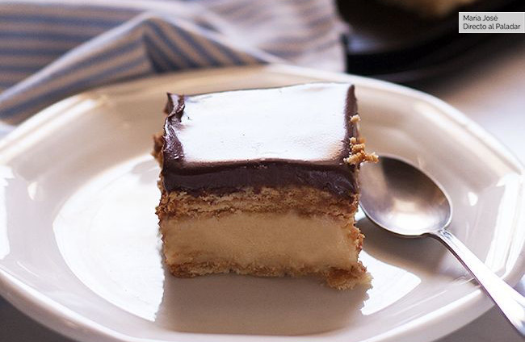

RECETARIO DE COCINA
DESAYUNO
VASITOS DE YOGUR GRIEGO, QUESO Y MERMELADA DE HIGOS
INGREDIENTES:
Yogur griego (griego auténtico) natural 500 g
Queso crema 200 g
Azúcar glasé tamizado 25 g
Ralladura de limón o lima 1
Mermelada de higos casera
Almendra laminada al gusto
PROCEDIMIENTO:
Para esta receta podemos usar yogur griego desnatado, aunque conviene escurrir bastante el agua para dejar una textura más espesa. Si es entero, podemos escurrirlo menos tiempo. Verter sobre una estameña, paño fino que no suelte pelo o varias capas de papel de cocina, sobre un un colador encima de un recipiente. Dejar mínimo una hora.
Remover ligeramente, apretar el paño escurriendo por arriba -no hacerlo si es papel- y retirar todo el yogur a otro recipiente. Mezclarlo con la ralladura de limón, el queso, la vainilla y el azúcar glasé tamizado. Combinar con varillas manuales o eléctricas hasta tener una crema.
Diluir un poco la mermelada de higos si estuviera muy espesa, batiéndola con un poco de agua o zumo. Se puede hacer al fuego para facilitar el proceso, pero conviene hacerlo con antelación para que se enfríe.
Poner un fondo de mermelada en los vasitos, añadir una capa de crema de yogur y, encima, unas cucharadas más de mermelada. Cubrir con más crema de yogur y remover con un cuchillo o palillo para darle un ligero efecto de remolino. Alternar más capas si se desea; va a quedar igual de rico.
Reposar en la nevera hasta el momento de servir. Antes de ello, tostar las almendras en una sartén sin engrasar, vigilando bien que no se quemen, a fuego medio y removiéndolas. Servir los vasitos con almendras -frías- y ralladura de limón al gusto.
QUESO COTTAGE CON PAPAYA Y SALSA DE ARÁNDANOS
INGREDIENTES:
Papaya (grande, o 1 pequeña) 0.5
Arándanos 200 g
Lima o limón 2
Queso Cottage 300 g
Pimienta negra molida
Sal
Semillas de chía
PROCEDIMIENTO:
Retirar las semillas de la papaya, pelar y cortar en cubos pequeños o picar la pulpa. Mezclar en un recipiente, recogiendo sus jugos, con una pizca de sal, pimienta negra, el zumo de una lima entera y un poco de ralladura. Si se desea, se puede añadir vainilla molida, canela o chile picante en polvo. Dejar marinar como mínimo 20 minutos, o toda la noche en la nevera.
Disponer los arándanos previamente lavados y secos en un cazo. Añadir el zumo de 1/2 lima y calentar a fuego suave. Machacar un poco con una cuchara, pero dejando frutos enteros. Mantener la cocción muy suave, durante unos 20 minutos o hasta que hayan soltados sus jugos. Retirar y dejar enfriar. Esto también se puede hacer la víspera y guardar en la nevera.
A la hora de servir, repartir el queso cottage en dos cuencos, escurriendo el suero que pueda llevar, y combinar con una buena porción de papaya y sus jugos, y otra de la salsa de arándanos, echando parte del líquido por encima del queso. Decorar con más ralladura de lima y semillas de chía o de otro tipo al gusto.
TOSTAS DE TOMATE Y MOZZARELLA CON MORTADELA DE BOLONIA
INGREDIENTES:
Pan de hogaza en rebanadas grandes 2
Tomate de rama, pera u otra variedad sabrosa 2
Mozzarella fresca 1
Mortadela de Bolonia en lonchas 4
Aceite de oliva virgen extra
Alcaparras
Pimienta negra molida
Sal gruesa
PROCEDIMIENTO:
Cortar las rebanadas de pan, de aproximadamente un dedo de grosor. Pintar ligeramente com aceite de oliva y tostar al gusto o dejar tal cual. Cortar el tomate en rodajas no muy gruesas. Escurrir el líquido de la mozzarella y cortar en lonchas de más o menos el mismo tamaño.
Distribuir dos o tres rodajas de tomate sobre el pan y añadir un poco de sal gruesa. Colocar encima la mozzarella, añadir pimienta negra y regar com un hilo de aceite de oliva. Disponer encima las lonchas de mortadela de Bolonia, doblándolas sobre sí mismas.
Coronar com unas alcaparras escurridas y agregar un poco más de pimienta o de aceite de oliva al gusto si se desea. Servir preferiblemente en el momento, aunque se pueden guardar unas horas en la nevera bien tapadas.
AGUACATES CON HUEVOS AL HORNO
INGREDIENTES:
Aguacate 1
Huevos 2
Sal y pimienta al gusto
Huevas para decorar
Cebollino para decorar
PROCEDIMIENTO:
Ponemos a precalentar el horno a 200º con calor arriba y abajo. Mientras el horno alcanza la temperatura indicada abrimos el aguacate procurando que nos queden dos mitades igualadas y con un golpe de cuchillo sacamos el hueso.
Cascamos un huevo y lo usamos para rellenar el hueco del aguacate, procurando que la yema quede intacta. Según el tamaño de los huevos usados, normalmente,nos sobrará un poco de clara que guardamos en la nevera para otras preparaciones.
Sazonamos con sal y pimienta y horneamos durante 10 minutos con calor solo en la parte de abajo, hasta que la clara quede cuajada y antes de que la yema se seque. Sacamos la fuente del horno y decoramos los huevos con una cucharadita de huevas y un poco de cebollino muy picado.
ALMUERZO
POTAJE DE GARBANZOS
INGREDIENTES:
Garbanzos secos (a ser posible frescos) 200 g
Cebolleta 2
Diente de ajo 3
Pimentón dulce (1 buena cucharadita) 5 g
Pimentón picante (opcional) 1 g
Laurel 1
Tomates en conserva natural (o 2 naturales, rallados sin piel) 3
Vinagre de Jerez 10 ml
Caldo de verduras o pollo o agua
Patata o 2 pequeñas 1
Huevo 2
Espinaca fresca 1 manojo (o acelgas)
Pimienta negra molida
Sal
Aceite de oliva virgen extra
Pan de hogaza duro en rebanadas (para la picada) 1
Almendras un puñadito (para la picada)
Perejil fresco unas hojas (para la picada)
PROCEDIMIENTO:
Lo primero es dejar los garbanzos a remojo en abundante agua fría la noche antes, preferiblemente unas 8-12 horas, o algunas más. Yo prefiero lavarlos un poco antes, y procuro usar una variedad local fresca de temporada, de calibre pequeño.
Picar la cebolleta y dos dientes de ajo. Poner a pochar la primera con un poco de sal en una cazuela con algo de aceite de oliva. Añadir el ajo, remover un poco y dejar sofreír unos minutos, vigilando que no se queme. Agregar el pimentón dulce y una pizca picante, removiendo bien rápidamente. Añadir el tomate, el laurel y una pizquita de sal.
Incorporar los garbanzos escurridos, un poco de vinagre y remover bien durante dos minutos. Cubrir con agua o caldo frío, llevar a ebullición, tapar, bajar el fuego y dejar cocer lentamente durante 60-90 minutos.
Cuando lleve una hora, más o menos, añadir unas patatas lavadas, peladas y cascadas. Si las dejamos más tiempo o en piezas más pequeñas casi se fundirán con el guiso, dando más espesor. Al gusto. Salpimentar ligeramente y comprobar el nivel de líquido. Debe quedar espeso, no en plan sopa.
Dependiendo del tipo de garbanzo y del agua tardarán unos 30 minutos más. También se puede hacer en olla rápida o exprés, aunque yo disfruto con la tranquilidad del chup-chup sin prisas. Cocer mientras los huevos dejándolos al punto, enfriar y pelar.
GRATINADO DE PUERROS CON JAMÓN Y QUESO
INGREDIENTES:
Puerro en conserva 8
Queso Edam en lonchas 8
Jamón de York en lonchas 8
Salsa bechamel 500 ml
Queso rallado para gratinar 50 g
PROCEDIMIENTO:
Partimos de la base de que disponemos de la salsa bechamel, lo que nos ahorrará unos 20 minutos. De no ser así, elaboramos una salsa bechamel siguiendo las indicaciones de la receta tradicional o las de la receta de salsa bechamel sin trigo, en caso de ser intolerantes al gluten.
Escurrimos los puerros del agua en el que vienen conservados y los secamos bien con papel absorbente. Envolvemos cada puerro en una loncha de queso y, a continuación, en una loncha de jamón cocido. Cubrimos la base de una fuente de horno con una capa de salsa bechamel y disponemos los puerros encima.
Vertemos la salsa bechamel sobre los puerros, asegurándonos que queden bien cubiertos para que no se sequen con el calor del horno. Esparcimos el queso rallado sobre la salsa bechamel y cocemos en el horno, pre-calentado a 200 ºC, durante unos 20 minutos o hasta que la superficie adquiera un color dorado. Retiramos del horno, dejamos reposar unos minutos y servimos calientes.
LUBINA AL HORNO CON PATATAS
INGREDIENTES:
Lubina de ración 2
Patata 3
Cebolla 1
Romero fresco (rama) 2
Limón 1
Aceite de oliva virgen extra
Sal
PROCEDIMIENTO:
Pelamos las patatas, las lavamos y las cortamos por la mitad a lo largo. Después cortamos cada mitad de patata en láminas de medio centímetro de grosor aproximadamente. Pelamos la cebolla y la cortamos en juliana. Calentamos un poco de aceite de oliva virgen extra en una sartén y cocemos la patata y la cebolla durante 15 minutos a fuego medio-bajo. Sazonamos al gusto.
Con esto conseguimos que la patata y la cebolla estén medio cocidas cuando las metamos en el horno y nos aseguramos que se terminan de hacer junto con las lubinas. Podemos meterlas en crudo, pero entonces tendremos que cortar todo en láminas muy finas para que no se queden crudas.
Cubrimos la base de una fuente de horno alargada con un chorrito de aceite de oliva virgen extra, colocamos la patata y la cebolla en la base y las dos ramas de romero fresco (bien lavadas). Sobre ello colocamos las lubinas limpias a las que habremos hecho dos cortes en los lomos y rellenado con medias lunas de limón.
Sazonamos, rociamos con más aceite de oliva virgen extra y cocemos en el horno pre-calentado a 190ºC durante 20-25 minutos o hasta que veamos que las lubinas están listas. Es importante conocer nuestro horno para poder darle el punto adecuado de cocción, la temperatura y tiempo indicados son indicativos.
CARNE CON TOMATES
INGREDIENTES:
Ternera para estofar, cortada en tacos 500 g
Cebolla 2
Diente de ajo 2
Laurel 1
Tomate triturado en conserva 500 g
Vino fino Montilla-Moriles 50 ml
Nuez moscada molida
Aceite de oliva virgen extra
Sal
PROCEDIMIENTO:
Calentamos un poco de aceite en una cacerola y marcamos en él las piezas de ternera, a fuego medio alto. Salpimentamos y removemos para que se doren por todos lados. Retiramos y reservamos en un plato aparte.
Añadimos un poco más de aceite a la cacerola y pochamos los dientes de ajo y la cebolla, todo ello pelado y picado. Cuando la cebolla esté tierna y transparente añadimos el vino. Removemos unos minutos hasta que se evapore el alcohol.
A continuación devolvemos la ternera a la cacerola junto con una hoja de laurel y una pizca de nuez moscada. Regamos con el tomate triturado. La carne tiene que quedar cubierta. Si no fuera el caso, añadimos un poco de agua o caldo.
Ponemos el fuego alto y, cuando arranque a hervir, bajamos la temperatura y cocemos suavemente durante aproximadamente 60-90 minutos o hasta que la ternera esté tierna. Probamos y ajustamos el punto de sal al final de la cocción. Dejamos reposar unos minutos antes de servir.
CENA
PIZZADILLA
INGREDIENTES:
Queso mozzarella
Queso parmesano
Salsa de tomate
Albahaca fresca
Pimienta negra
Aceite de oliva virgen extra
Chorizo de león o ingredientes al gusto
Tortillas de trigo.
PROCEDIMIENTO:
Precalentamos el horno a su máxima potencia. Untamos la sartén apta para el horno con aceite impregnándola toda en una fina capa. Lo ideal es echar un poco de aceite en papel de cocina y untar la sartén usando este. Colocamos el fuego a máxima potencia.
Una vez la sartén esté caliente colocamos la tortilla. Se consigue un crujiente más firme si colocamos la parte de la tortilla con burbujas más finas boca abajo. Mientras se va tostando colocamos encima los ingredientes: la salsa de tomate, el queso mozzarella, parmesano o grana padano, albahaca y/o orégano, pimienta negra y cualquier ingrediente que nos apetezca.
Una vez que veamos que la tortilla está más o menos crujiente es el momento de introducir la sartén en la parte alta del horno. Basta entre 3-5 minutos a máxima potencia para que el queso se funda.
PASTA CON MANTEQUILLA TOSTADA Y PARMESANO
INGREDIENTES:
Pasta larga seca (linguine, espaguetis...) 200 g
Mantequilla 55 g
Queso parmesano rallado muy fino 40 g
Sal
Pimienta negra molida

PROCEDIMIENTO:
Poner a calentar abundante agua con sal en una olla alta y cocer los linguine o pasta larga elegida siguiendo las instrucciones del paquete, para sacarla un minuto antes de que esté al dente. Antes de escurrir, retirar 125 ml del caldo y reservar (o un vaso pequeño).
Escurrir la pasta pero sin hacer esfuerzos por retirar todo el agua de la misma, para que conserve cierta humedad mientras se enfría y termina de quedar al dente con el calor residual. Reservar.
Disponer la mantequilla en una sartén amplia donde después nos quepa la pasta. Mejor si es de color clarito, o al menos no negra, para ver mejor el tono del tostado. Derretir a fuego medio y cocer, removiendo de vez en cuando.
Primero empezarán a separarse los sólidos de la mantequilla, generando un poco de una especie de espuma, y después se irá volviendo tostada. Cuando tenga ese color como de caramelo ligero, y emita un olor a frutos secos, retirar del fuego. Vigilar que no se queme.
Añadir la pasta y remover bien para impregnarla de la mantequilla. Agregar el queso, mezclar y dejar que se funda y se integre (debe estar rallado muy fino, como arenilla). Echar pequeñas cucharadas del agua de cocción reservada hasta obtener una textura melosa, y servir inmediatamente.
SÁNDWICH CLUB
INGREDIENTES:
Rebanadas de pan de molde 4
Lonchas de bacon 3
Lonchas de jamón de York 3
Loncha de queso emmental 1
Loncha de queso para fundir o queso crema 1
Filete de pollo 1
Cucharada de mayonesa 1
Mantequilla
Tomate 1
Lechuga
PROCEDIMIENTO:
Ponemos las lonchas de jamón de York entre las dos variedades de queso y éstas entre dos rebanadas de pan de molde untadas ligeramente con mantequilla. Lo haremos a fuego muy lento en una sartén para que se dore y los quesos se fundan. Tostamos el bacon y cocinamos los trozos de pechuga de pollo en la plancha.
Con estos dos ingredientes, elaboramos un segundo sándwich que también doramos en la plancha untando ligeramente con mantequilla las rebanadas. Untamos la parte superior de uno de ellos con mayonesa, lo cubrimos con trozos de lechuga y rebanadas de tomate y lo tapamos con el otro sándwich. Ayudados de unas brochetas para que no se nos desarme, cortamos el sándwich en 4 porciones.
SOLOMILLO DE CERDO CON MEMBRILLO
INGREDIENTES:
Solomillo de cerdo en medallones de 2cm 1
Cebolla 1
Dulce de membrillo 150g
Caldo de pollo 300ml
Dientes de ajo 4
Aceite de oliva virgen extra
Sal
Pimienta negra romero fresco (opcional)
Un puñado de piñones
PROCEDIMIENTO:
Salpimentamos los medallones. Calentamos un poco de aceite en una sartén y marcamos la carne a fuego fuerte junto con los dientes de ajos pelados. Deben quedar sellados por fuera y crudos por dentro. Retiramos y reservamos. Desechamos los ajos. Añadimos un poco más de aceite y pochamos la cebolla, finamente picada, diez minutos o hasta que esté transparente.
Añadimos la carne de membrillo troceada y cocemos hasta que se funda. Incorporamos el caldo y hervimos unos minutos para ligar la salsa antes de devolver los medallones a la sartén. Cocemos cinco minutos. Si queremos una salsa sin tropezones, la trituramos y colamos. Servimos con piñones tostados.
POSTRES
TRUFAS DE CAVA Y FRAMBUESA
Chocolate negro 70% de cacao 100 g
Nata líquida 80 ml
Cava 30 ml
Azúcar glasé 25 g
Mantequilla 5 g
Frambuesas deshidratadas 25 g
Cacao puro en polvo

PROCEDIMIENTO:
Calentamos la nata junto al azúcar hasta que hierva. En un cuenco troceamos el chocolate y vertemos la nata caliente por encima mientras removemos con unas varillas para que el chocolate se deshaga completamente. Agregamos la mantequilla y el cava mezclamos totalmente.
Vertemos la mezcla en una bandeja, echamos la frambuesa, removemos y refrigeramos hasta que la masa se haya endurecido (cuanta más delgada sea la superficie antes se enfría). Una vez tengamos la masa cuajada, hacemos bolitas de igual tamaño con una cuchara y damos forma de bolita perfecta con las manos, teniendo cuidado de no dar mucho calor a la masa.
Por último rebozamos cada trufa en lo que prefiramos: cacao en polvo, virutas, bolitas de anís, etc. Refrigeramos hasta el momento de tomar en un recipiente hermético o túper para que el chocolate no se humedezca.
TARTA DE LA ABUELA
Leche 1 l Piel de limón 1 Canela en rama 2 Azúcar 200 g Maizena cucharadas soperas rasas 10 Yemas de huevo 6 Chocolate fondant 200 g Nata líquida 35% materia grasa 200 ml Mantequilla 50 g Leche suficiente para remojar las galletas Galletas cuadradas paquetes 3
PROCEDIMIENTO:
Empezamos hirviendo la leche la noche anterior, con la piel de limón y las ramas de canela. La dejamos infusionar toda la noche para intensificar su sabor. Después, en un cazo deshacemos 200 gr de azúcar en un poco de la leche (previamente colada), añadimos las yemas de huevo y la maizena.
Colocamos el cazo al fuego y añadimos la leche poco a poco y dejamos hervir la leche hasta que la mezcla espese, siempre removiendo para que no se pegue. La reservamos, cubriendo el cazo con papel film. Para que no se forme costra es necesario que el papel film toque directamente con la crema.
Ponemos una capa de galletas remojadas ligeramente en leche (no demasiado para que no se rompan) en el fondo del molde. Por encima repartimos la crema pastelera y sobre ella ponemos dos capas más de galletas remojadas ligeramente en leche. Metemos el molde en la nevera.
Mientras preparamos la cobertura de chocolate. Ponemos la nata y el chocolate en un cazo a fuego lento hasta que se derrita el chocolate. Retiramos el cazo del fuego y añadimos la mantequilla. Dejamos que se temple y cuando esté casi fría la vertemos en el molde. Guardar en la nevera como mínimo 2 horas, mejor toda la noche.
MUG CAKE DE CHOCOLATE
INGREDIENTES:
Aceite de girasol (una cucharada) 15 g
Chocolate negro (para postres) 20 g
Azúcar 45 g
Leche (una cucharada) 15 g
Clara de huevo 2
Harina de trigo 30 g
Levadura química (media cucharadita) 3 g
Jengibre molido (media cucharadita) 3 g
Peras (madura) 1
PROCEDIMIENTO:
En una taza grande, de unos 300 ml de capacidad como mínimo, metemos el chocolate troceado y el aceite. La introducimos en el microondas y calentamos 30 segundos a máxima potencia. Retiramos, removemos y comprobamos si el chocolate esta fundido. Si no es el caso, repetimos la operación con cuidado de no pasarnos con el tiempo para evitar que se queme el chocolate.
Con el chocolate derretido y caliente, agregamos el azúcar y removemos hasta disolver. Después agregamos la leche y removemos de nuevo. Montamos las claras a punto de nieve y las incorporamos poco a poco, removiendo con suavidad para que no pierdan el aire en el proceso. Agregamos la harina, el impulsor químico y el jengibre molido y removemos suavemente.
Cuando hayamos obtenido una masa homogénea, pelamos la pera y la colocamos en el centro de la taza, sobre la masa. No apretamos, solo la colocamos encima, para evitar que se hunda en exceso con la cocción. Introducimos en el microondas y cocemos a 600W de potencia durante tres minutos. Retiramos y dejamos reposar unos minutos antes de consumir.
PUDDING DE CHOCOLATE SUIZO
INGREDIENTES:
Chocolate negro de buena calidad (suizo, preferiblemente) 50 g
Leche o bebida vegetal 500 ml
Sal una pizca
Azúcar vainillado 5 g
Canela molida una pizca
Azúcar 35 g
Cacao en polvo puro sin azúcar 12 g
Maizena 30 g
PROCEDIMIENTO:
Trocear el chocolate. Separar 150 ml de la leche y llevar al congelador. Colocar el resto en un cazo, calentar con el azúcar vainillado y la sal y añadir el chocolate. Remover hasta que se derrita y apagar el fuego. Sacar la leche restante del congelador (no debe estar congelada, solo muy fría) y añadir la maizena, el azúcar, el cacao y la canela.
Remover muy bien con unas varillas hasta que se haya incorporado todo, sin grumos. Echar sobre el cazo templado y volver a calentar a fuego medio. Remover constantemente con las varillas hasta que espese, con cuidado de que no se queme por abajo. Tapar con un paño o con plástico film mientras se enfría un poco.
Cuando ya no esté muy caliente, remover de nuevo con las varillas y repartir en recipientes del tamaño deseado, da para unas 6 raciones de tamaño medio o 4 más grandes. Cubrir con plástico film para que se conserve más suave la parte exterior, aunque tampoco es totalmente necesario. Llevar a la nevera hasta que se enfríe.